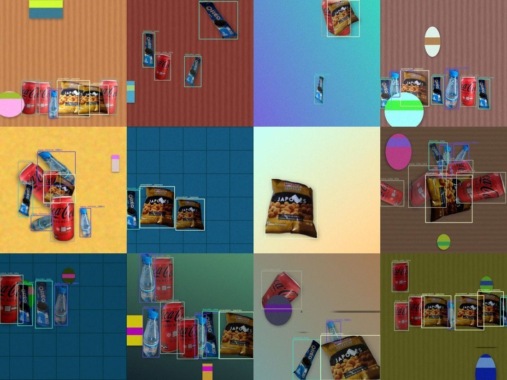
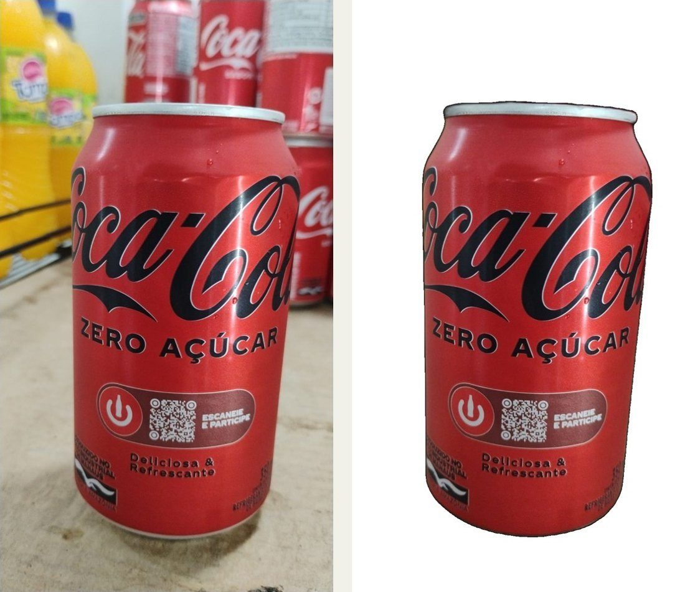
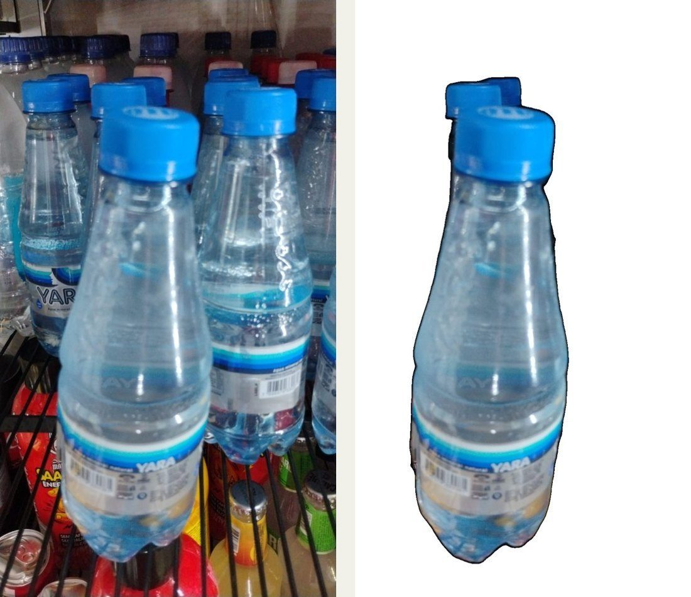
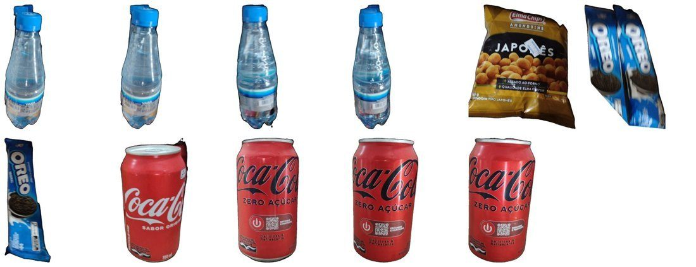
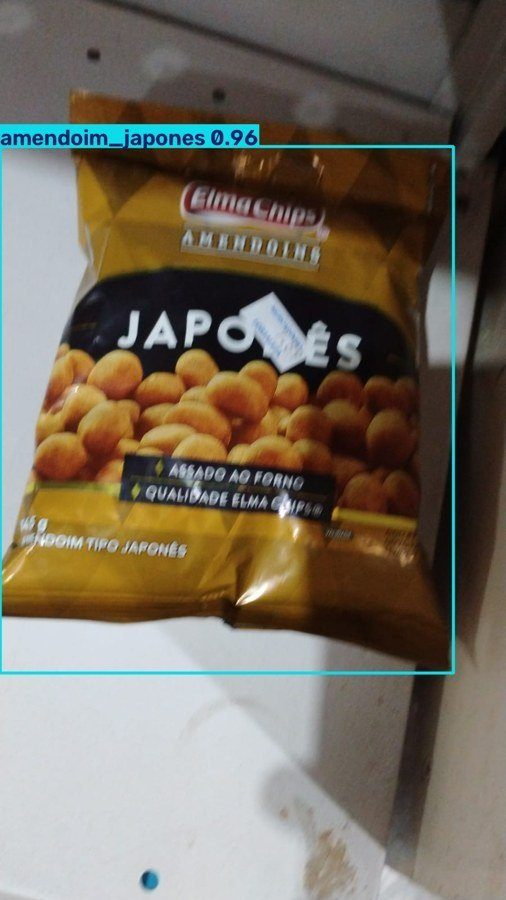
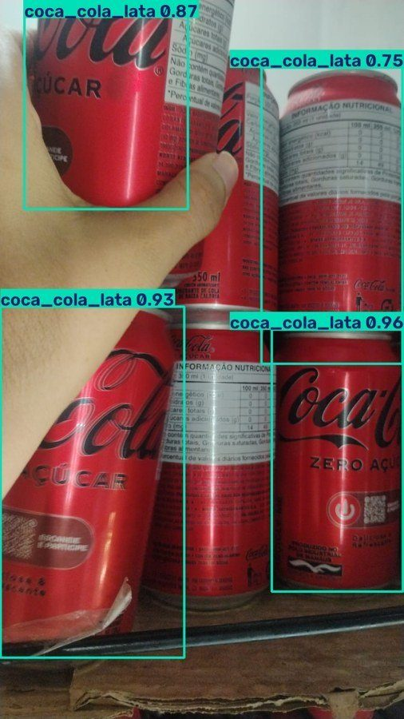
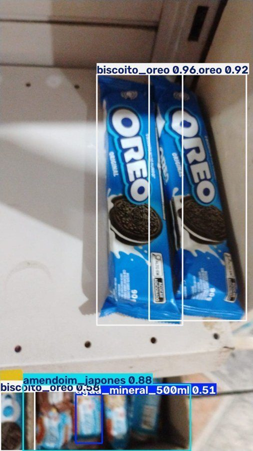
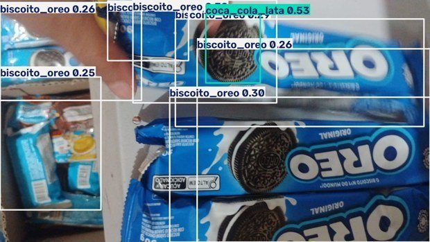

Visão computacional que reconhece o produto retirado da prateleira, para apoiar o controle de estoque de pequenos estabelecimentos.

O projeto nasceu de um caso real: uma loja de conveniência autônoma, sem atendentes, monitorada por câmeras. O cliente pega o produto, paga sozinho e vai embora.
Lojas de conveniência, mercados de bairro e balcões ainda conferem o estoque à mão, contando produto por produto.
As perdas no varejo (shrink) foram estimadas em US$ 132 bilhões no mundo em 2024, contra US$ 112 bilhões em 2022 (BizTech Magazine, 2025).
A loja já tem câmeras. A pergunta do projeto é se dá para usar essas imagens para saber qual produto saiu da prateleira.
Às vezes o cliente retira mais produtos do que paga. A diferença só aparece dias depois, na conferência do estoque, e aí já não dá para saber quando nem o quê.
Retiradas e reposições não são registradas no momento em que ocorrem.
O estoque físico e o do sistema divergem, e a conferência manual é demorada.
A simples diferença entre quadros confunde o produto com a mão, a sombra ou a mudança de luz. É preciso reconhecer o produto.
As tecnologias tradicionais resolvem só uma parte do problema:
| Tecnologia | O que detecta | Limitação |
|---|---|---|
| Peso (balança) | Que o peso mudou | Não diz qual produto; produtos de peso parecido se confundem |
| RFID | A etiqueta do produto | Exige etiquetar cada unidade e instalar antenas |
| Óptico / infravermelho | Interrupção de um feixe | Funciona bem só em um ponto (ex.: máquina de venda) |
| Visão computacional | Qual produto e onde ele está | Precisa de um bom conjunto de imagens — é o foco deste projeto |
Seguindo a orientação do professor, o escopo foi fechado no que é, de fato, um problema de IA: reconhecer o produto na imagem. Uma câmera fixa, comportamento padrão do cliente, retirada de um item por vez.
Foto ou quadro de vídeo da câmera fixa.
Detector pré-treinado, ajustado (fine-tuning) com imagens dos produtos da loja.
Qual produto, onde está e com qual confiança.
Referência: Shoman et al. (2022), F1 = 0,44 em problema parecido.
Produtos do catálogo piloto:
coca_cola_lata
agua_mineral_500ml
biscoito_oreo
amendoim_japones
O projeto mudou de rumo três vezes. Cada mudança veio de um problema real ou de uma orientação em aula.
A primeira proposta usava IA para prever a demanda e gerar alertas de reposição. Foi trocada por um problema mais concreto: saber o que sai da prateleira.
Proposta de estoque inteligente com sensores de peso e câmeras. Já havia um protótipo web com cesta virtual, estoque e reconhecimento simulado. Feedback do professor: escopo complexo demais; focar só no que é IA, porque sensor de peso não é IA.
Arquitetura com três fontes de detecção intercambiáveis (simulado, sensor de peso e câmera real), banco de dados e plano de 10 semanas. Ponto fraco declarado: menos de 10 fotos, ainda sem dataset.
Script de raspagem (icrawler), limpeza de repetidas por hash perceptual, divisão antes do aumento de dados. Feedback em 29/09: fotos comerciais da internet não representam a loja real; 90% do tempo de um projeto de IA vai para os dados.
De 2.188 imagens encontradas, só 634 novas foram aprovadas na revisão foto a foto (69% rejeitadas). Licença e autor de cada imagem registrados em planilha.
Sai a internet, entram fotos dos produtos reais. O fundo é removido e os recortes são montados em cenas variadas, com as caixas de detecção geradas automaticamente. A tarefa passa de classificação para detecção.
162 fotos da loja → 11 recortes aprovados → 4.200 cenas → 50 épocas na GPU. No teste com 59 fotos reais, o modelo identificou o produto em 53 (90%).
Em vez de desenhar caixas à mão em milhares de imagens, o projeto fotografa cada produto, recorta e monta cenas. Como o programa sabe onde colou cada produto, a caixa sai certa automaticamente.
fotosfotos da loja pelo celular
162rembga IA tira o fundo da foto
IArecortar.pyrecortes revisados e aprovados
11gerar_cenas.pycenas com caixas prontas
4.200Colab T4épocas de treino do YOLOv8
50best.ptmodelo treinado (6,5 MB)
✓


Prateleira, balcão ou cesta; de 1 a 8 produtos; objetos que não são produto (distratores); produtos encobertos uns pelos outros; e "defeitos de câmera": luz, sombra, desfoque, tremido, ruído e compressão JPEG. A semente é fixa, então o dataset pode ser gerado de novo igualzinho.
| Divisão | Cenas |
|---|---|
| Treino | 3.000 |
| Validação | 600 |
| Teste | 600 + fotos reais |
YOLOv8 treinado por 50 épocas em 36 minutos na GPU T4 do Google Colab. O erro de classe (cls_loss) caiu de 1,15 na primeira época para 0,17 na última.
59 fotos de verdade, fora do treino. Acerto = o produto com maior confiança é o da foto.
Total: 53 de 59 fotos (90%). O Oreo foi o ponto fraco: tinha só 2 recortes no treino.




Seguindo o guia do professor: o modelo serve de instrumento para achar os defeitos do próprio dataset, e cada volta gera uma nova versão.
Detecção de objetos com fine-tuning a partir de pesos pré-treinados.
Remoção de fundo, recorte e geração das cenas sintéticas com caixas no formato YOLO.
Treino e avaliação no navegador, sem instalar nada no computador.
Assistentes de IA (Claude) foram usados para explorar ideias, revisar o escopo, apoiar a escrita de scripts e organizar os documentos e este site. As decisões, a coleta das fotos, a revisão das imagens, o treino e a conferência dos números são da autora.